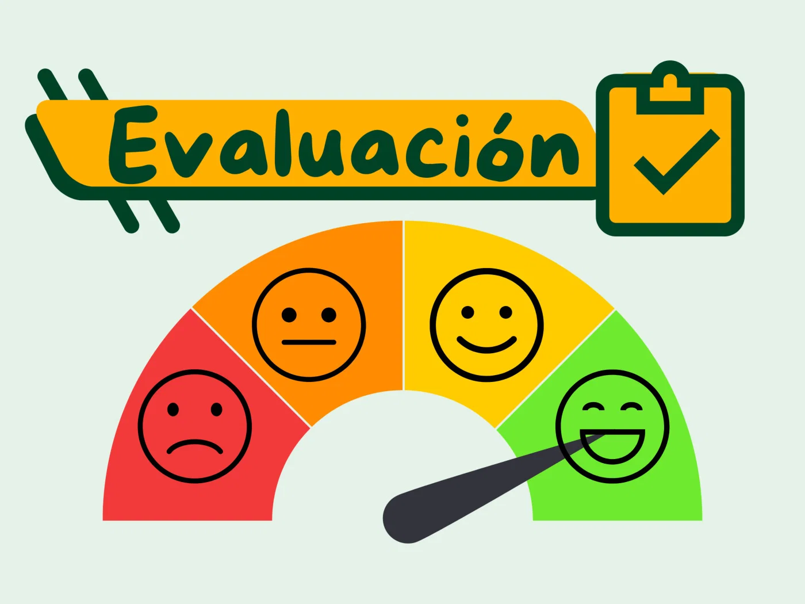

¿Cómo y cuándo se evalúa?
Durante esta Situación de Aprendizaje, la evaluación se realizará a lo largo de todo el proceso, no solo al final.
Se tendrá en cuenta:
La participación en las actividades del aula.
El esfuerzo y la actitud durante las tareas.
Los productos finales realizados.
La evaluación sirve para comprobar lo que has aprendido y ayudarte a mejorar.

Actividades y productos que cuentan para la evaluación.
Para la evaluación se tendrán en cuenta las siguientes actividades:
✅ Infografía individual
En la infografía se valorará:
Que la información sea clara y relacionada con el dinero y las compras.
El uso de imágenes o elementos visuales.
El esfuerzo realizado.
✅ Actividad en el supermercado del barrio
Durante la salida se realizará una grabación en vídeo como evidencia del trabajo.
En esta actividad se observará:
El uso del dinero.
La comprensión de los precios.
La toma de decisiones durante la compra.
Estas actividades forman parte de los productos finales de la Situación de Aprendizaje.
Instrumentos de evaluación.
Para evaluar el trabajo se utilizarán distintos instrumentos de evaluación:
✔ Lista de cotejo para la infografía, que ayuda a comprobar si el trabajo está bien realizado antes de entregarlo.
✔ Observación directa durante la salida al supermercado, utilizando una lista de cotejo para valorar el uso del dinero y la toma de decisiones.
✔ Autoevaluación, mediante actividades de revisión y reflexión realizadas en clase.